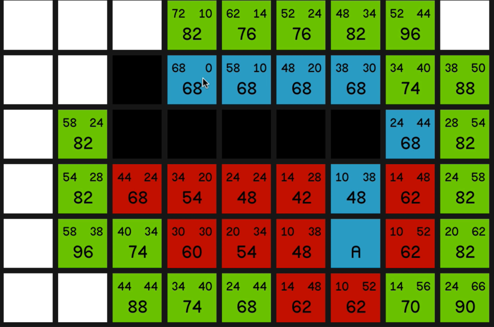
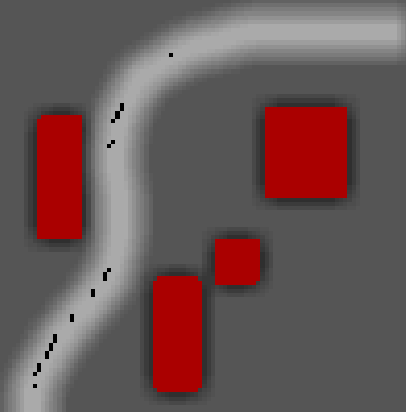

A* Pathfinfing
This project is an implementation of the A* (a-star) pathfinding search algorithm in Unity using C#. It is used in apps such as Google Maps to find the optimal route between two locations.
The World
The testing world is set out in order to give the algorithm a slight challenge:
=>The red boxes are obstacles it has to avoid,
=>the grass is unfavorable ground which is preferably avoided,
=>the dirt path being the preferred surface.
The grid
The algorithm uses a 2-dimensional grid which is scaled to fit any sized world. Each box is called a node. The nodes obstacles occupy are considered unwalkable.
The Algorithm

Without delving into too many details, the A* algorithm using 2 measurements: The distance from the starting node (known as the G cost) and the distance from the target node (known as the Heuristic, or H cost). These two costs added up are called the F cost. (why? I don't know). The algorithm works by calculating the costs for nodes which are neighboring the already explored ones, then picking the one with the lowest cost as the next node in the path, then exploring its neighbors and so on until the target node is reached. This system is guaranteed to find not only a path, but the shortest one.
It also is extremely quick, using optimization techniques such as heaps, I was able to run it on a world with 250,000 nodes and find the optimal path from one end to another in 24 milliseconds.
To calculate the distances, I used a horizontal move to count as 1, and a diagonal move as √2, or 1.4 arbitrary units. To use only integers, these values are multiplied by ten, meaning a horizontal move is considered 10, a diagonal 14.
Path Optimizations
Using the algorithm as-is means there are many redundant points. For example, moving in a straight line, we can use only one waypoint denoting a straight line, rather one every node, as shown in the picture.
Weights
 You may have noticed that in the picture above, the algorithm did not take the shortest route, and instead preferred the path. This is due to weights implemented in the algorithm. Weights mean that the cost for going on some surfaces is greater than other surfaces. By tweaking the weights, we can create an path which only goes on grass, sometimes dares walking over it, or one which is terrified of the prospect of grass The weights can be pictured through a choropleth map.
This algorithm has grass being set as 3 times as unfavorable as the path. This shows that it still will go through the grass if it is much shorter.
This algorithm has grass as 50 times more unfavorable, and it does its best to avoid grass at all costs.